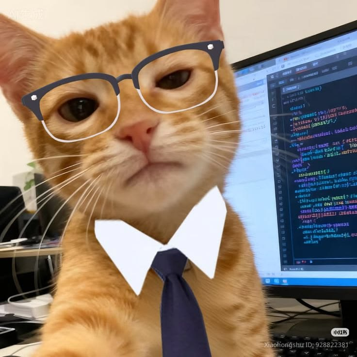

Next.js
React Flow
Website Organisasi
Halaman struktur organisasi interaktif memakai Next.js dan React Flow.
Lihat projectTerbuka untuk kolaborasi & magang
Halo, Friend 👋
Membangun pembangkit energi tenaga uap yang fleksibel dan ramah lingkungan.

Saya mahasiswa D4 Pembangkit Energi yang sangat aktif sekali untuk membuat pembangkit energi yang berguna bagi Indonesia. Selain itu, sepertinya saya juga bisa menjelma jadi atlet panjat tebing.
Perjalanan singkat di dunia
2022 - 2025
Saya bersekolah di SMAN 1 Baturetno.
2025 — Sekarang
Kuliah di jurusan Teknik Elektro di prodi D4 Rekayasa Pembangkit Energi.
2026
Menjalankan pelatihan dan workshop untuk anggota UKM.
Halaman struktur organisasi interaktif memakai Next.js dan React Flow.
Lihat projectDashboard produktivitas terhubung Google Sheets dengan visualisasi grafik.
Lihat projectGanti dengan deskripsi singkat: masalah apa yang diselesaikan.
Lihat projectGanti dengan deskripsi singkat: masalah apa yang diselesaikan.
Lihat projectGanti dengan deskripsi singkat: masalah apa yang diselesaikan.
Lihat projectGanti dengan deskripsi singkat: masalah apa yang diselesaikan.
Lihat project